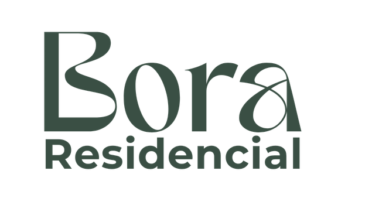
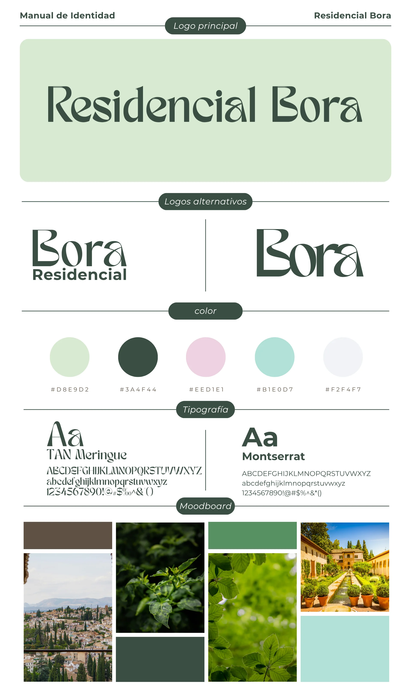

Residencial Bora
Residencial Bora
Una marca a la altura de su entorno.
A brand worthy of its surroundings.
Bora tenía una identidad anticuada e inconsistente. Pedía algo elegante y sereno, inspirado en la naturaleza y la arquitectura nazarí.
Bora had a dated, inconsistent identity. It called for something elegant and serene, inspired by nature and Nasrid architecture.
Rebranding completo, de la A a la Z.
A complete rebrand, A to Z.
Logo principal y alternativos, paleta verde Alhambra con acentos suaves y un sistema tipográfico de contraste.
Primary and alternative logos, an Alhambra-green palette with soft accents, and a contrasting type system.
- TAN Meringue para alma + Montserrat para claridad
- TAN Meringue for soul + Montserrat for clarity
- Moodboard: jardines, agua y piedra
- Moodboard: gardens, water and stone
Una identidad coherente y aplicable.
A coherent, applicable identity.
Un manual de marca que vive igual de bien en cartelería, dossieres y digital.
A brand book that lives equally well across signage, dossiers and digital.
También diseñé y construí su landing en WordPress.
I also designed and built its landing in WordPress.
La nueva identidad cobra vida en una landing propia, hecha a medida sobre WordPress.
The new identity comes to life on its own bespoke landing, built on WordPress.

Logo principalPrimary logo
Logo invertidoInverted logo
Manual de identidad completo: logo, versiones, paleta, tipografía y moodboard.
Full identity manual: logo, versions, palette, type and moodboard.